After the first big storm, I broke down and bought a new
snowblower. Am I ever glad I did!
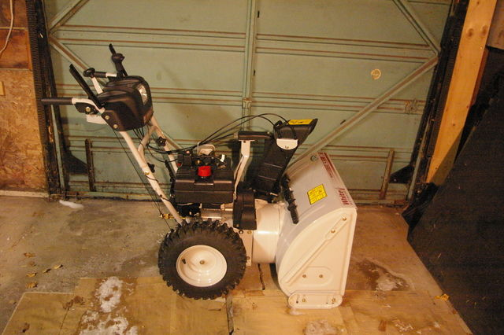
Dec 17, 2007: The pile is already growing.
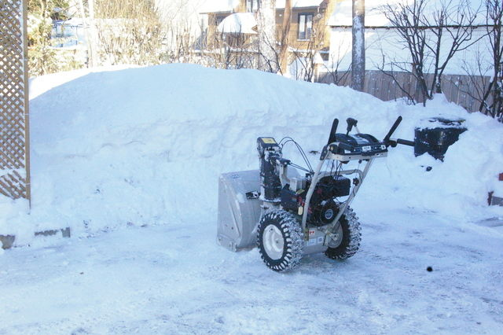
Our house.
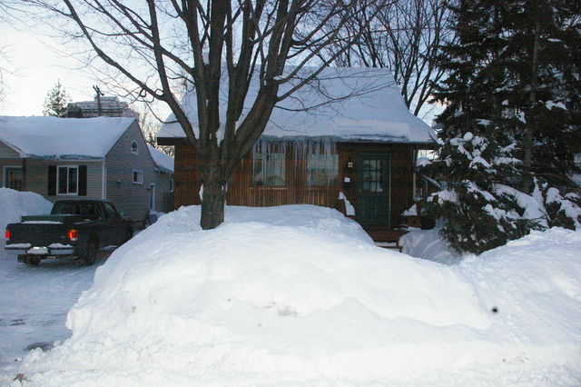
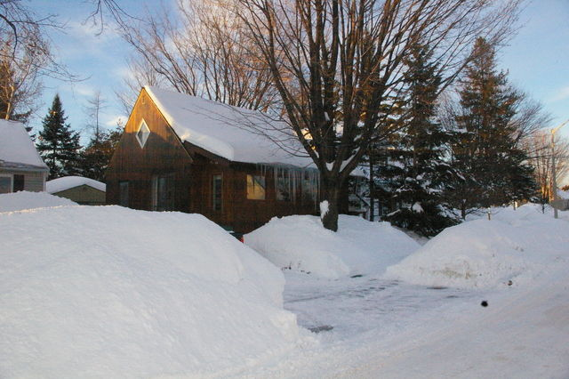
Our neighbour's house.
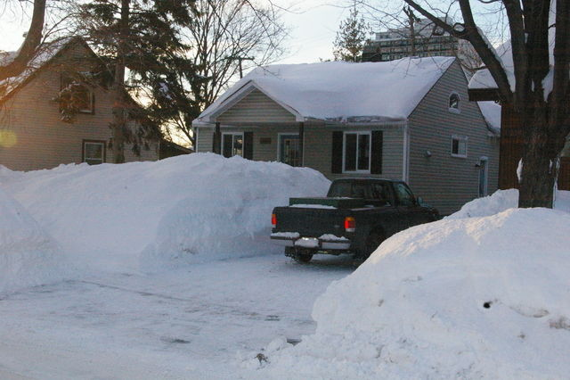
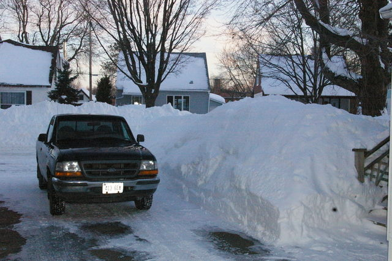
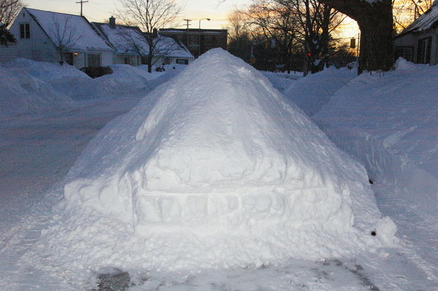
I cut a path on the sidewalk.
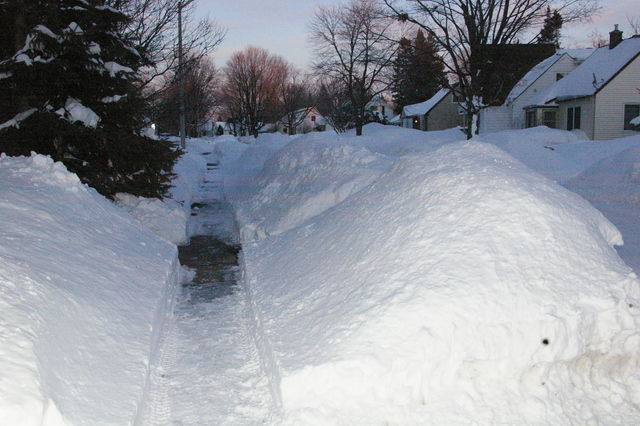
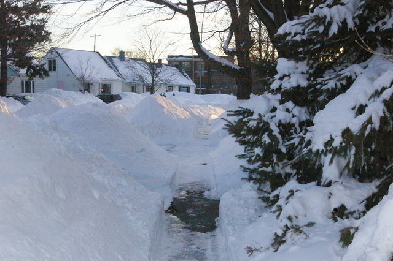
The pile at the back. I was aggressive at trying to keep
snow off this pile.
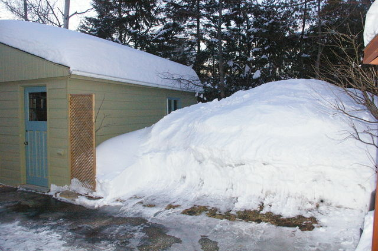
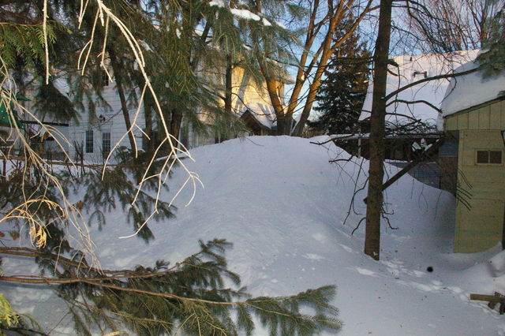
The snow came off the porch roof in one shot. Yes, the passenger mirror is missing.
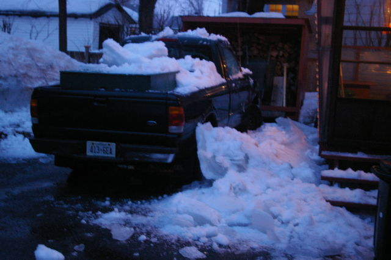
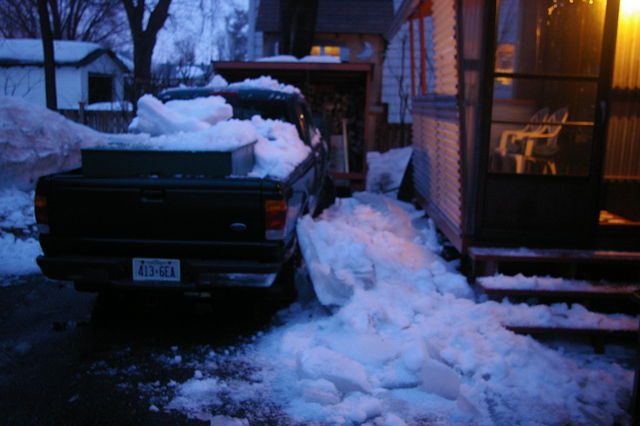
Some green!
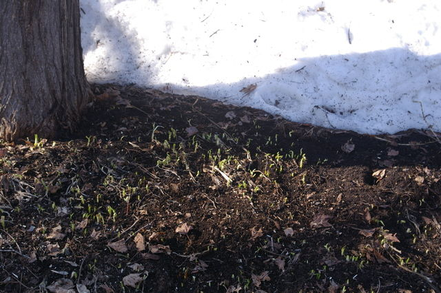
April 16: Snow is gone from front and going fast from
the back.
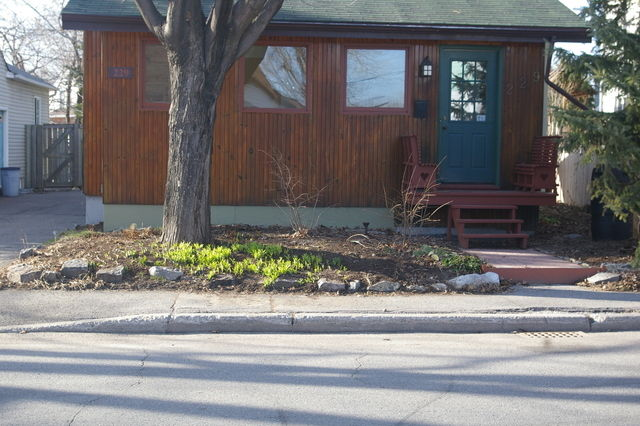
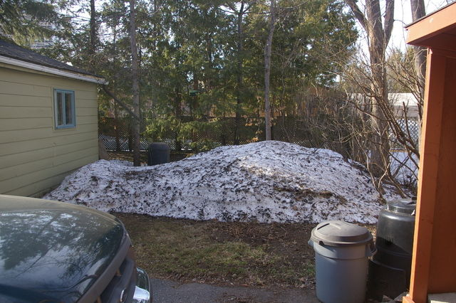
April 23: One week later, almost gone.
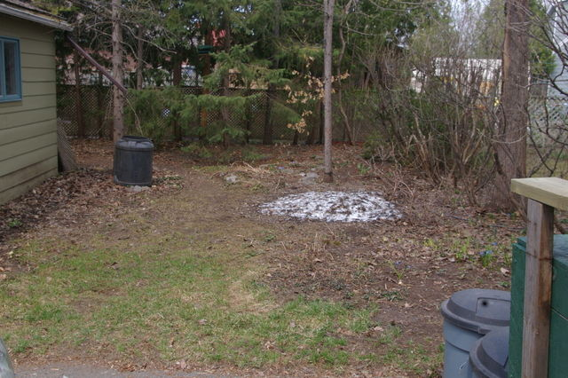
April 24: All the snow is gone.
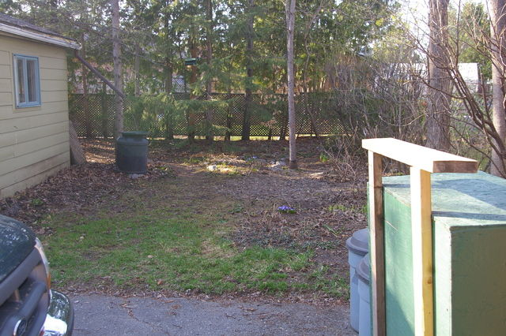
July 1: Summer!
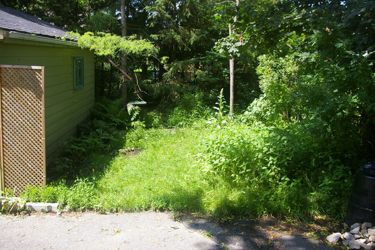